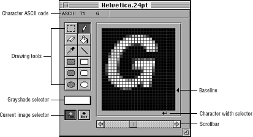
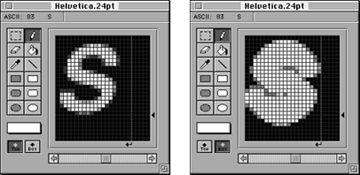

Figure 1: FontWriter Character Edit window.

Figure 2: Character Edit window drawing tools.
The drawing tools let you make changes to the font, as illustrated in the table below:
Table 1: FontWriter drawing tools.
--------------------------------------------------------
Tool |Function
--------------------------------------------------------
Marquee |Selects a region to edit as follows:Cut,
|copy, or paste using the standard
|editing commands.Shift the selected
|region by one pixel using the Transform
|menu.Flip the selected region vertically
|or horizontally using the Transform
|menu.
--------------------------------------------------------
Pencil |Draws individual pixels in the currently
|selected color.
--------------------------------------------------------
Eraser |Erases individual pixels to black.
|Double-clicking on it completely erases
|the current character.
--------------------------------------------------------
Paint bucket |Selects a paint color, then the paint
|bucket. Click on a pixel in the edit
|region and the paint bucket fills all
|adjacent pixels to match the color of
|the selected pixel in the paint bucket
|color.
--------------------------------------------------------
Eye dropper |Changes the color selector to the color
|of the pixel clicked in the edit region.
--------------------------------------------------------
Line tool |Draws lines in the currently selected
|color.
--------------------------------------------------------
Filled shape |Draws filled shapes in the selected
|color.
--------------------------------------------------------
Outline shape |Draws outline shapes in the selected
|color.
--------------------------------------------------------
Color selector |Selects the shade of gray to use for
|drawing. To preview the font in color,
|use the Preview window.
--------------------------------------------------------

Figure 3: A character only display (left) and character and outline (right).